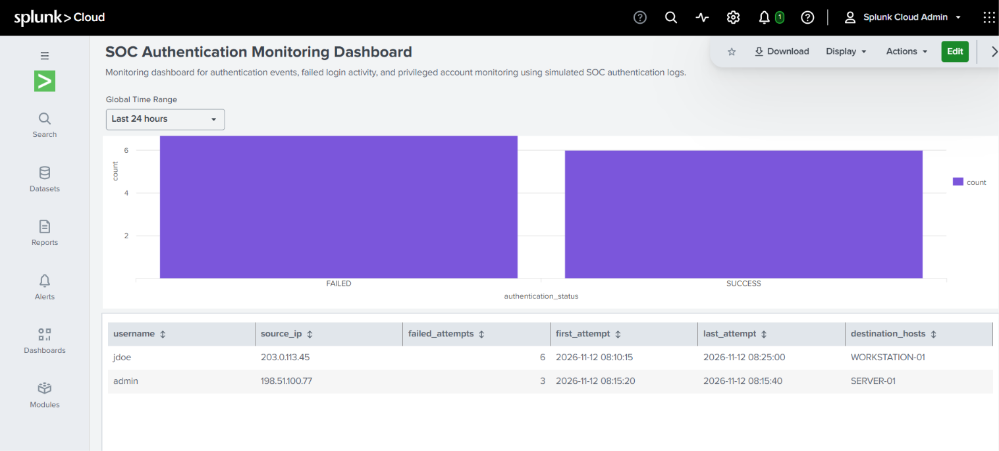
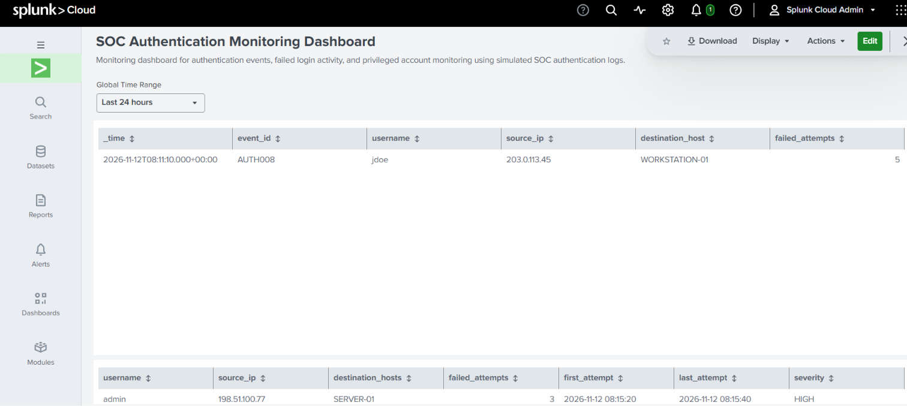

Project 02 · Security Operations
SOC Investigation Lab
A hands-on Security Operations Centre (SOC) investigation project using simulated authentication logs, Python detection scripts, Splunk searches and dashboards, and Sentinel-style KQL queries.
Project type: Hands-on SOC investigation lab
Dataset: 15 simulated authentication events
Tools: Python, Splunk, SPL, KQL
Framework: MITRE ATT&CK
Focus: Authentication monitoring, threat detection, investigation and incident response
Project Objectives
- Analyse authentication logs to identify suspicious login activity.
- Develop Python-based detection logic for authentication attacks.
- Write SPL searches and build a Splunk dashboard.
- Develop Sentinel-style KQL detection queries.
- Investigate suspicious events and document findings.
- Create an incident response playbook.
Detection Scenarios
- Repeated failed login attempts.
- Successful login following repeated failures.
- Failed login attempts against privileged accounts.
- Successful privileged account login monitoring.
Python Detection Results
Python scripts analyse the authentication dataset and identify suspicious patterns for further investigation.
- 15 authentication events analysed.
- 9 failed and 6 successful authentication events.
- Repeated failed login activity identified for two accounts.
- A successful login identified after five preceding failed attempts.
- Three failed privileged-account login attempts identified.
Splunk Investigation and Dashboard
Authentication data was uploaded to Splunk Cloud. SPL searches were used to investigate suspicious authentication patterns, and a Dashboard Studio dashboard was created to display authentication activity and detection results.
- Authentication events by status.
- Repeated failed login attempts.
- Successful login after repeated failures.
- Failed privileged account logins.
- Successful privileged account logins.
Dashboard displaying authentication monitoring panels.

Visual investigation of authentication detection results.

Microsoft Sentinel-Style KQL
Developed KQL queries covering repeated failed logins, successful logins after repeated failures, and privileged account activity.
Investigation and MITRE ATT&CK Mapping
Investigation findings were documented and mapped to relevant MITRE ATT&CK techniques, including:
- T1110 – Brute Force: Repeated failed authentication attempts.
- T1078 – Valid Accounts: Successful authentication following suspicious activity.
Incident Response Playbook
Created a structured playbook covering identification, analysis, containment, eradication, recovery and lessons learned. The playbook documents proposed response actions for the simulated investigation scenario.
Project Documentation
Project Scope and Limitations
This portfolio project uses synthetic authentication data. Splunk Cloud was used for searches and dashboard development. Sentinel-style KQL was developed and locally validated, but was not tested in a live Sentinel workspace. The findings demonstrate practical learning and investigation techniques, not experience monitoring a production SOC environment.